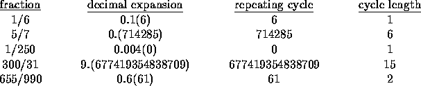

| Repeating Decimals |
The decimal expansion of the fraction 1/33 is , where the is used to indicate that the cycle 03 repeats indefinitely with no intervening digits. In fact, the decimal expansion of every rational number (fraction) has a repeating cycle as opposed to decimal expansions of irrational numbers, which have no such repeating cycles.
Examples of decimal expansions of rational numbers and their repeating cycles are shown below. Here, we use parentheses to enclose the repeating cycle rather than place a bar over the cycle.

Write a program that reads numerators and denominators of fractions and determines their repeating cycles.
For the purposes of this problem, define a repeating cycle of a fraction to be the first minimal length string of digits to the right of the decimal that repeats indefinitely with no intervening digits. Thus for example, the repeating cycle of the fraction 1/250 is 0, which begins at position 4 (as opposed to 0 which begins at positions 1 or 2 and as opposed to 00 which begins at positions 1 or 4).
Each line of the input file consists of an integer numerator, which is nonnegative, followed by an integer denominator, which is positive. None of the input integers exceeds 3000. End-of-file indicates the end of input.
For each line of input, print the fraction, its decimal expansion through the first occurrence of the cycle to the right of the decimal or 50 decimal places (whichever comes first), and the length of the entire repeating cycle.
In writing the decimal expansion, enclose the repeating cycle in parentheses when possible. If the entire repeating cycle does not occur within the first 50 places, place a left parenthesis where the cycle begins - it will begin within the first 50 places - and place ``...)" after the 50th digit.
Print a blank line after every test case.
76 25 5 43 1 397
76/25 = 3.04(0) 1 = number of digits in repeating cycle 5/43 = 0.(116279069767441860465) 21 = number of digits in repeating cycle 1/397 = 0.(00251889168765743073047858942065491183879093198992...) 99 = number of digits in repeating cycle